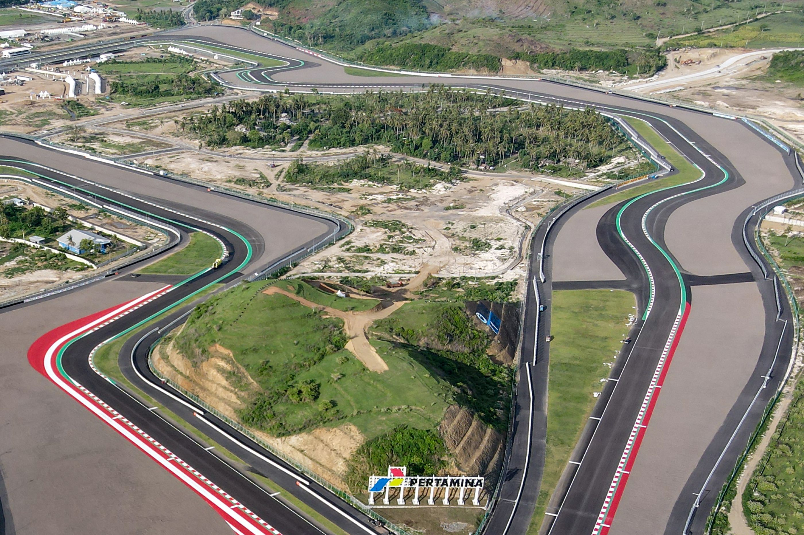
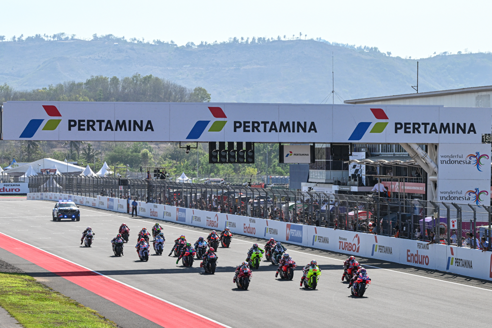
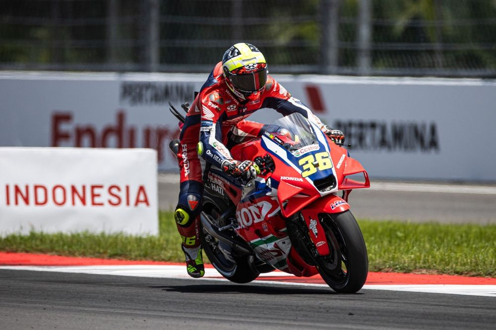

Pertamina Mandalika Circuit
Ubicación: Baturiti (Indonesia), Indonesia
Longitud total: 4301 metros
Anchura: 15 metros
Número de vueltas: 27
Patrocinador: Pertamina
Fecha del evento: 2025-10-05T09:00:00
Vencedor: F.Aldeguer (Duración: PT41M07S)
Referencias
Galería de imágenes



Videos del circuito
Caída Marc Márquez en Mandalika
Caída Muñoz en Mandalika
Clasificación
- Marc Márquez (545 puntos)
- Álex Márquez (362 puntos)
- Pecco Bagnaia (274 puntos)